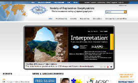
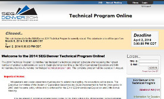
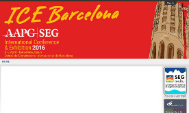
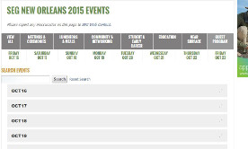

Portfolio of Work
- seg.org - Site theme design and development Designed and implemented seg.org theme across organization and various platforms using HTML/CSS/JS. Platforms include Liferay portal (www.seg.org, JSP/Java/Velocity template engine), DotNetNuke (shop.seg.org, ASP.Net/C#/VB.Net), MediaWiki (wiki.seg.org), and a third-party hosted site (library.seg.org).
-  abstracts.seg.org - Web application design and development Designed and implemented abstracts.seg.org as a customizable in-house solution for submitting, reviewing, and organizing technical abstracts for presentation at SEG conferences. Written in Coldfusion and connecting to a MS SQL Server backend.
- ICE Barcelona 2016 - SEG site theme modificationSEG and sister organization AAPG are holding a joint international conference twice a year, one of which is in Barcelona in 2016. We happen to be hosting the content for this particular meeting, and when they pointed their subdomain at our servers they got our main site with the meeting content. Needless to say that wasn't part of the specification and to fix it through normal development channels would have taken too much time. I used my CSS and Javascript/jQuery knowledge and knowledge of the SEG site theme and created a web content only solution. My solution not only removed SEG branding from the default site theme but it also placed marked web content in place of the header as well as changed the way the navigation worked. The solution solved the branding problem while creating a site template in liferay for future joint meeting site rebrandings.
- SEG AM 2015 - Events page navigation and searchOur web content team had a delimma: they had 70+ events to display and search and neither the asset display portlet or the search portlet in our CMS (Liferay portal) were working correctly. They needed a solution that would display all of the events for each day in the correct order and filterable by category and by day and not have to create a web content page for each event. Being that they already had the menu in place I used my knowledge and expertise in HTML, CSS, and JS/jQuery to create a solution that used the asset publisher display of asset abstracts with content tags to filter, sort, and tag the underlying HTML such that they could be styled and displayed in a collapsable date format. The events menu at the top of the page allows the user to show only a certain day, show days with certain categories of events, and to search and show events that match the given search term - all without leaving the page.